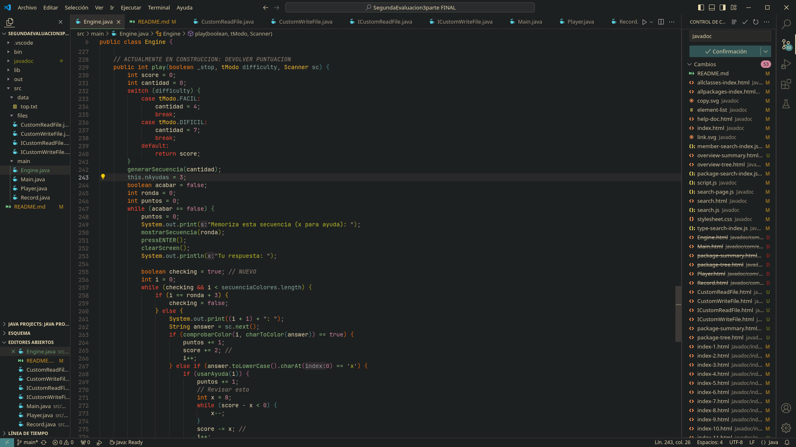

Mis proyectos
Popular juego "Simón Dice" para la clase de programación de 1º DAM. Consiste en memorizar una secuencia de colores y repetirla hasta ganar o perder. Consta de 2 modos de juego, normal y dificil.

Máquina virtual sencilla hecha como proyecto de tercer trimestre de 1º DAM de la asignatura de programación. Consta de diferentes instrucciones con bytecodes para realizar operaciones sencillas como suma, resta, multiplicación y división